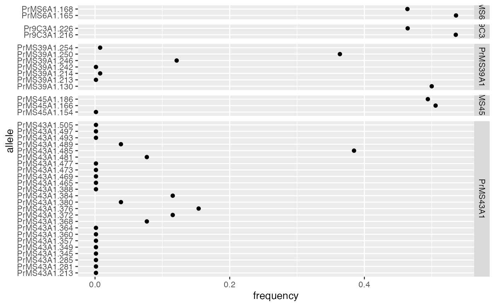

This function utilizes rrmlg to calculate multilocus genotypes
and then subsets each locus by the resulting MLGs to calculate the
round-robin allele frequencies used for pgen and psex.
rraf(gid, pop = NULL, res = "list", by_pop = FALSE, correction = TRUE, ...)
| gid | a genind or genclone object |
|---|---|
| pop | either a formula to set the population factor from the
|
| res | either "list" (default), "vector", or "data.frame". |
| by_pop | When this is |
| correction | a logical indicating whether or not zero-valued allele
frequencies should be corrected using the methods outlined in
correcting rare alleles.
(Default: |
| ... | options from correcting rare alleles. The default is to correct allele frequencies to 1/n |
a vector or list of allele frequencies
Calculating allele frequencies for clonal populations is a difficult task. Frequencies calculated on non-clone-corrected data suffer from bias due to non-independent samples. On the other hand, frequencies calculated on clone-corrected data artificially increases the significance of rare alleles. The method of round-robin allele frequencies as presented in Parks and Werth (1993) provides a method of calculating allele frequencies in a way that minimizes both of these effects.
Allele frequencies at a given locus are
calculated based on samples that are clone corrected without that
locus. When this happens, rare alleles have a high likelihood of dropping
out, giving them a frequency of "0". For some analyses, this is a perfectly
fine outcome, but for analyses such as pgen and
psex, this could result in undefined values. Setting
correction = TRUE will allow you to control how these zero-valued
allele frequencies are corrected. For details, please see the documentation
on correcting rare alleles and examples.
When by_pop = TRUE, the output will be a matrix of allele
frequencies. Additionally, when the argument pop is not NULL,
by_pop is automatically TRUE.
Arnaud-Haond, S., Duarte, C. M., Alberto, F., & Serrão, E. A. 2007. Standardizing methods to address clonality in population studies. Molecular Ecology, 16(24), 5115-5139.
Parks, J. C., & Werth, C. R. 1993. A study of spatial features of clones in a population of bracken fern, Pteridium aquilinum (Dennstaedtiaceae). American Journal of Botany, 537-544.
Zhian N. Kamvar, Jonah Brooks, Stacy A. Krueger-Hadfield, Erik Sotka
data(Pram) # Round robin allele frequencies, correcting zero-valued frequencies to 1/nInd(Pram) rraf(Pram)#> $PrMS6A1 #> PrMS6A1.165 PrMS6A1.168 #> 0.5360825 0.4639175 #> #> $Pr9C3A1 #> Pr9C3A1.216 Pr9C3A1.226 #> 0.5357143 0.4642857 #> #> $PrMS39A1 #> PrMS39A1.130 PrMS39A1.213 PrMS39A1.214 PrMS39A1.242 PrMS39A1.246 PrMS39A1.250 #> 0.500000000 0.001371742 0.007575758 0.001371742 0.121212121 0.363636364 #> PrMS39A1.254 #> 0.007575758 #> #> $PrMS45A1 #> PrMS45A1.154 PrMS45A1.166 PrMS45A1.186 #> 0.001371742 0.505747126 0.494252874 #> #> $PrMS43A1 #> PrMS43A1.213 PrMS43A1.281 PrMS43A1.285 PrMS43A1.345 PrMS43A1.349 PrMS43A1.357 #> 0.001371742 0.001371742 0.001371742 0.001371742 0.001371742 0.001371742 #> PrMS43A1.360 PrMS43A1.364 PrMS43A1.368 PrMS43A1.372 PrMS43A1.376 PrMS43A1.380 #> 0.001371742 0.001371742 0.076923077 0.115384615 0.153846154 0.038461538 #> PrMS43A1.384 PrMS43A1.388 PrMS43A1.465 PrMS43A1.469 PrMS43A1.473 PrMS43A1.477 #> 0.115384615 0.001371742 0.001371742 0.001371742 0.001371742 0.001371742 #> PrMS43A1.481 PrMS43A1.485 PrMS43A1.489 PrMS43A1.493 PrMS43A1.497 PrMS43A1.505 #> 0.076923077 0.384615385 0.038461538 0.001371742 0.001371742 0.001371742 #># \dontrun{ ## Round robin allele frequencies will be different than observed # Compare to without round robin: PrLoc <- seploc(Pram, res = "mat") # get locus by matrix lapply(PrLoc, colMeans, na.rm = TRUE)#> $PrMS6A1 #> PrMS6A1.165 PrMS6A1.168 #> 1.0397805 0.9602195 #> #> $Pr9C3A1 #> Pr9C3A1.216 Pr9C3A1.226 #> 1.0411523 0.9588477 #> #> $PrMS39A1 #> PrMS39A1.130 PrMS39A1.213 PrMS39A1.214 PrMS39A1.242 PrMS39A1.246 PrMS39A1.250 #> 1.000000000 0.001371742 0.001371742 0.001371742 0.322359396 0.648834019 #> PrMS39A1.254 #> 0.024691358 #> #> $PrMS45A1 #> PrMS45A1.154 PrMS45A1.166 PrMS45A1.186 #> 0.001371742 1.008230453 0.990397805 #> #> $PrMS43A1 #> PrMS43A1.213 PrMS43A1.281 PrMS43A1.285 PrMS43A1.345 PrMS43A1.349 PrMS43A1.357 #> 0.001371742 0.027434842 0.001371742 0.002743484 0.004115226 0.001371742 #> PrMS43A1.360 PrMS43A1.364 PrMS43A1.368 PrMS43A1.372 PrMS43A1.376 PrMS43A1.380 #> 0.002743484 0.035665295 0.189300412 0.209876543 0.407407407 0.058984911 #> PrMS43A1.384 PrMS43A1.388 PrMS43A1.465 PrMS43A1.469 PrMS43A1.473 PrMS43A1.477 #> 0.082304527 0.015089163 0.001371742 0.001371742 0.001371742 0.038408779 #> PrMS43A1.481 PrMS43A1.485 PrMS43A1.489 PrMS43A1.493 PrMS43A1.497 PrMS43A1.505 #> 0.117969822 0.556927298 0.138545953 0.100137174 0.001371742 0.002743484 #># Without round robin, clone corrected: Pcc <- clonecorrect(Pram, strata = NA) # indiscriminantly clone correct PccLoc <- seploc(Pcc, res = "mat") lapply(PccLoc, colMeans, na.rm = TRUE)#> $PrMS6A1 #> PrMS6A1.165 PrMS6A1.168 #> 1.0612245 0.9387755 #> #> $Pr9C3A1 #> Pr9C3A1.216 Pr9C3A1.226 #> 1.0714286 0.9285714 #> #> $PrMS39A1 #> PrMS39A1.130 PrMS39A1.213 PrMS39A1.214 PrMS39A1.242 PrMS39A1.246 PrMS39A1.250 #> 1.00000000 0.01020408 0.01020408 0.01020408 0.30612245 0.58163265 #> PrMS39A1.254 #> 0.08163265 #> #> $PrMS45A1 #> PrMS45A1.154 PrMS45A1.166 PrMS45A1.186 #> 0.01020408 1.03061224 0.95918367 #> #> $PrMS43A1 #> PrMS43A1.213 PrMS43A1.281 PrMS43A1.285 PrMS43A1.345 PrMS43A1.349 PrMS43A1.357 #> 0.01020408 0.04081633 0.01020408 0.02040816 0.02040816 0.01020408 #> PrMS43A1.360 PrMS43A1.364 PrMS43A1.368 PrMS43A1.372 PrMS43A1.376 PrMS43A1.380 #> 0.01020408 0.07142857 0.15306122 0.21428571 0.24489796 0.16326531 #> PrMS43A1.384 PrMS43A1.388 PrMS43A1.465 PrMS43A1.469 PrMS43A1.473 PrMS43A1.477 #> 0.08163265 0.05102041 0.01020408 0.01020408 0.01020408 0.07142857 #> PrMS43A1.481 PrMS43A1.485 PrMS43A1.489 PrMS43A1.493 PrMS43A1.497 PrMS43A1.505 #> 0.18367347 0.37755102 0.14285714 0.06122449 0.01020408 0.02040816 #>## Different methods of obtaining round robin allele frequencies # Get vector output. rraf(Pram, res = "vector")#> PrMS6A1.165 PrMS6A1.168 Pr9C3A1.216 Pr9C3A1.226 PrMS39A1.130 PrMS39A1.213 #> 0.536082474 0.463917526 0.535714286 0.464285714 0.500000000 0.001371742 #> PrMS39A1.214 PrMS39A1.242 PrMS39A1.246 PrMS39A1.250 PrMS39A1.254 PrMS45A1.154 #> 0.007575758 0.001371742 0.121212121 0.363636364 0.007575758 0.001371742 #> PrMS45A1.166 PrMS45A1.186 PrMS43A1.213 PrMS43A1.281 PrMS43A1.285 PrMS43A1.345 #> 0.505747126 0.494252874 0.001371742 0.001371742 0.001371742 0.001371742 #> PrMS43A1.349 PrMS43A1.357 PrMS43A1.360 PrMS43A1.364 PrMS43A1.368 PrMS43A1.372 #> 0.001371742 0.001371742 0.001371742 0.001371742 0.076923077 0.115384615 #> PrMS43A1.376 PrMS43A1.380 PrMS43A1.384 PrMS43A1.388 PrMS43A1.465 PrMS43A1.469 #> 0.153846154 0.038461538 0.115384615 0.001371742 0.001371742 0.001371742 #> PrMS43A1.473 PrMS43A1.477 PrMS43A1.481 PrMS43A1.485 PrMS43A1.489 PrMS43A1.493 #> 0.001371742 0.001371742 0.076923077 0.384615385 0.038461538 0.001371742 #> PrMS43A1.497 PrMS43A1.505 #> 0.001371742 0.001371742# Getting the output as a data frame allows us to use ggplot2 to visualize (Prdf <- rraf(Pram, res = "data.frame"))#> frequency locus allele #> PrMS6A1.165 0.536082474 PrMS6A1 PrMS6A1.165 #> PrMS6A1.168 0.463917526 PrMS6A1 PrMS6A1.168 #> Pr9C3A1.216 0.535714286 Pr9C3A1 Pr9C3A1.216 #> Pr9C3A1.226 0.464285714 Pr9C3A1 Pr9C3A1.226 #> PrMS39A1.130 0.500000000 PrMS39A1 PrMS39A1.130 #> PrMS39A1.213 0.001371742 PrMS39A1 PrMS39A1.213 #> PrMS39A1.214 0.007575758 PrMS39A1 PrMS39A1.214 #> PrMS39A1.242 0.001371742 PrMS39A1 PrMS39A1.242 #> PrMS39A1.246 0.121212121 PrMS39A1 PrMS39A1.246 #> PrMS39A1.250 0.363636364 PrMS39A1 PrMS39A1.250 #> PrMS39A1.254 0.007575758 PrMS39A1 PrMS39A1.254 #> PrMS45A1.154 0.001371742 PrMS45A1 PrMS45A1.154 #> PrMS45A1.166 0.505747126 PrMS45A1 PrMS45A1.166 #> PrMS45A1.186 0.494252874 PrMS45A1 PrMS45A1.186 #> PrMS43A1.213 0.001371742 PrMS43A1 PrMS43A1.213 #> PrMS43A1.281 0.001371742 PrMS43A1 PrMS43A1.281 #> PrMS43A1.285 0.001371742 PrMS43A1 PrMS43A1.285 #> PrMS43A1.345 0.001371742 PrMS43A1 PrMS43A1.345 #> PrMS43A1.349 0.001371742 PrMS43A1 PrMS43A1.349 #> PrMS43A1.357 0.001371742 PrMS43A1 PrMS43A1.357 #> PrMS43A1.360 0.001371742 PrMS43A1 PrMS43A1.360 #> PrMS43A1.364 0.001371742 PrMS43A1 PrMS43A1.364 #> PrMS43A1.368 0.076923077 PrMS43A1 PrMS43A1.368 #> PrMS43A1.372 0.115384615 PrMS43A1 PrMS43A1.372 #> PrMS43A1.376 0.153846154 PrMS43A1 PrMS43A1.376 #> PrMS43A1.380 0.038461538 PrMS43A1 PrMS43A1.380 #> PrMS43A1.384 0.115384615 PrMS43A1 PrMS43A1.384 #> PrMS43A1.388 0.001371742 PrMS43A1 PrMS43A1.388 #> PrMS43A1.465 0.001371742 PrMS43A1 PrMS43A1.465 #> PrMS43A1.469 0.001371742 PrMS43A1 PrMS43A1.469 #> PrMS43A1.473 0.001371742 PrMS43A1 PrMS43A1.473 #> PrMS43A1.477 0.001371742 PrMS43A1 PrMS43A1.477 #> PrMS43A1.481 0.076923077 PrMS43A1 PrMS43A1.481 #> PrMS43A1.485 0.384615385 PrMS43A1 PrMS43A1.485 #> PrMS43A1.489 0.038461538 PrMS43A1 PrMS43A1.489 #> PrMS43A1.493 0.001371742 PrMS43A1 PrMS43A1.493 #> PrMS43A1.497 0.001371742 PrMS43A1 PrMS43A1.497 #> PrMS43A1.505 0.001371742 PrMS43A1 PrMS43A1.505library("ggplot2") ggplot(Prdf, aes(y = allele, x = frequency)) + geom_point() + facet_grid(locus ~ ., scale = "free_y", space = "free")## Round Robin allele frequencies by population (matrix only) # By default, allele frequencies will be corrected by 1/n per population (Prbp <- rraf(Pram, by_pop = TRUE))#> PrMS6A1.165 PrMS6A1.168 Pr9C3A1.216 Pr9C3A1.226 PrMS39A1.130 #> Nursery_CA 0.5000000 0.5000000 0.5000000 0.5000000 0.5 #> Nursery_OR 0.5000000 0.5000000 0.5000000 0.5000000 0.5 #> JHallCr_OR 0.6166667 0.3833333 0.6166667 0.3833333 0.5 #> NFChetHigh_OR 0.5000000 0.5000000 0.5000000 0.5000000 0.5 #> Coast_OR 0.5000000 0.5000000 0.5000000 0.5000000 0.5 #> HunterCr_OR 0.5000000 0.5000000 0.5000000 0.5000000 0.5 #> Winchuck_OR 0.5000000 0.5000000 0.5000000 0.5000000 0.5 #> ChetcoMain_OR 0.5000000 0.5000000 0.5000000 0.5000000 0.5 #> PistolRSF_OR 0.5000000 0.5000000 0.5000000 0.5000000 0.5 #> PrMS39A1.213 PrMS39A1.214 PrMS39A1.242 PrMS39A1.246 PrMS39A1.250 #> Nursery_CA 0.006896552 0.006896552 0.006896552 0.35000000 0.15000000 #> Nursery_OR 0.014084507 0.014084507 0.035714286 0.07142857 0.35714286 #> JHallCr_OR 0.004098361 0.004098361 0.004098361 0.01923077 0.48076923 #> NFChetHigh_OR 0.008771930 0.020000000 0.008771930 0.04000000 0.42000000 #> Coast_OR 0.029411765 0.029411765 0.029411765 0.40909091 0.09090909 #> HunterCr_OR 0.015151515 0.015151515 0.015151515 0.33333333 0.16666667 #> Winchuck_OR 0.028571429 0.028571429 0.028571429 0.02857143 0.50000000 #> ChetcoMain_OR 0.062500000 0.062500000 0.062500000 0.20000000 0.20000000 #> PistolRSF_OR 0.250000000 0.250000000 0.250000000 0.25000000 0.50000000 #> PrMS39A1.254 PrMS45A1.154 PrMS45A1.166 PrMS45A1.186 PrMS43A1.213 #> Nursery_CA 0.006896552 0.006896552 0.500000 0.500000 0.006896552 #> Nursery_OR 0.035714286 0.014084507 0.500000 0.500000 0.014084507 #> JHallCr_OR 0.004098361 0.004098361 0.537037 0.462963 0.004098361 #> NFChetHigh_OR 0.020000000 0.008771930 0.500000 0.500000 0.008771930 #> Coast_OR 0.029411765 0.029411765 0.500000 0.500000 0.029411765 #> HunterCr_OR 0.015151515 0.015151515 0.500000 0.500000 0.015151515 #> Winchuck_OR 0.028571429 0.028571429 0.500000 0.500000 0.028571429 #> ChetcoMain_OR 0.100000000 0.062500000 0.500000 0.500000 0.062500000 #> PistolRSF_OR 0.250000000 0.250000000 0.500000 0.500000 0.250000000 #> PrMS43A1.281 PrMS43A1.285 PrMS43A1.345 PrMS43A1.349 PrMS43A1.357 #> Nursery_CA 0.006896552 0.006896552 0.006896552 0.006896552 0.006896552 #> Nursery_OR 0.014084507 0.014084507 0.014084507 0.014084507 0.014084507 #> JHallCr_OR 0.004098361 0.004098361 0.004098361 0.004098361 0.004098361 #> NFChetHigh_OR 0.008771930 0.008771930 0.008771930 0.008771930 0.008771930 #> Coast_OR 0.029411765 0.029411765 0.029411765 0.029411765 0.029411765 #> HunterCr_OR 0.015151515 0.015151515 0.015151515 0.015151515 0.015151515 #> Winchuck_OR 0.028571429 0.028571429 0.028571429 0.028571429 0.028571429 #> ChetcoMain_OR 0.062500000 0.062500000 0.062500000 0.062500000 0.062500000 #> PistolRSF_OR 0.250000000 0.250000000 0.250000000 0.250000000 0.250000000 #> PrMS43A1.360 PrMS43A1.364 PrMS43A1.368 PrMS43A1.372 PrMS43A1.376 #> Nursery_CA 0.006896552 0.006896552 0.166666667 0.333333333 0.006896552 #> Nursery_OR 0.014084507 0.125000000 0.125000000 0.250000000 0.014084507 #> JHallCr_OR 0.004098361 0.004098361 0.004098361 0.004098361 0.428571429 #> NFChetHigh_OR 0.008771930 0.008771930 0.111111111 0.055555556 0.055555556 #> Coast_OR 0.029411765 0.029411765 0.250000000 0.029411765 0.029411765 #> HunterCr_OR 0.015151515 0.015151515 0.500000000 0.015151515 0.015151515 #> Winchuck_OR 0.028571429 0.028571429 0.028571429 0.028571429 0.333333333 #> ChetcoMain_OR 0.062500000 0.062500000 0.062500000 0.062500000 0.500000000 #> PistolRSF_OR 0.250000000 0.250000000 0.250000000 0.250000000 0.500000000 #> PrMS43A1.380 PrMS43A1.384 PrMS43A1.388 PrMS43A1.465 PrMS43A1.469 #> Nursery_CA 0.006896552 0.006896552 0.006896552 0.006896552 0.006896552 #> Nursery_OR 0.014084507 0.014084507 0.014084507 0.014084507 0.014084507 #> JHallCr_OR 0.004098361 0.071428571 0.004098361 0.004098361 0.004098361 #> NFChetHigh_OR 0.111111111 0.166666667 0.008771930 0.008771930 0.008771930 #> Coast_OR 0.029411765 0.250000000 0.029411765 0.029411765 0.029411765 #> HunterCr_OR 0.015151515 0.015151515 0.015151515 0.015151515 0.015151515 #> Winchuck_OR 0.166666667 0.028571429 0.028571429 0.028571429 0.028571429 #> ChetcoMain_OR 0.062500000 0.062500000 0.062500000 0.062500000 0.062500000 #> PistolRSF_OR 0.250000000 0.250000000 0.250000000 0.250000000 0.250000000 #> PrMS43A1.473 PrMS43A1.477 PrMS43A1.481 PrMS43A1.485 PrMS43A1.489 #> Nursery_CA 0.006896552 0.006896552 0.006896552 0.33333333 0.16666667 #> Nursery_OR 0.014084507 0.014084507 0.014084507 0.37500000 0.12500000 #> JHallCr_OR 0.004098361 0.004098361 0.004098361 0.42857143 0.07142857 #> NFChetHigh_OR 0.008771930 0.008771930 0.166666667 0.27777778 0.05555556 #> Coast_OR 0.029411765 0.029411765 0.029411765 0.25000000 0.25000000 #> HunterCr_OR 0.015151515 0.015151515 0.015151515 0.01515152 0.01515152 #> Winchuck_OR 0.028571429 0.028571429 0.500000000 0.02857143 0.02857143 #> ChetcoMain_OR 0.062500000 0.166666667 0.166666667 0.16666667 0.06250000 #> PistolRSF_OR 0.250000000 0.250000000 0.250000000 0.50000000 0.25000000 #> PrMS43A1.493 PrMS43A1.497 PrMS43A1.505 #> Nursery_CA 0.006896552 0.006896552 0.006896552 #> Nursery_OR 0.014084507 0.014084507 0.014084507 #> JHallCr_OR 0.004098361 0.004098361 0.004098361 #> NFChetHigh_OR 0.008771930 0.008771930 0.008771930 #> Coast_OR 0.029411765 0.029411765 0.029411765 #> HunterCr_OR 0.500000000 0.015151515 0.015151515 #> Winchuck_OR 0.028571429 0.028571429 0.028571429 #> ChetcoMain_OR 0.062500000 0.062500000 0.062500000 #> PistolRSF_OR 0.250000000 0.250000000 0.250000000# This might be problematic because populations like PistolRSF_OR has a # population size of four. # By using the 'e' argument to rare_allele_correction, this can be set to a # more reasonable value. (Prbp <- rraf(Pram, by_pop = TRUE, e = 1/nInd(Pram)))#> PrMS6A1.165 PrMS6A1.168 Pr9C3A1.216 Pr9C3A1.226 PrMS39A1.130 #> Nursery_CA 0.5000000 0.5000000 0.5000000 0.5000000 0.5 #> Nursery_OR 0.5000000 0.5000000 0.5000000 0.5000000 0.5 #> JHallCr_OR 0.6166667 0.3833333 0.6166667 0.3833333 0.5 #> NFChetHigh_OR 0.5000000 0.5000000 0.5000000 0.5000000 0.5 #> Coast_OR 0.5000000 0.5000000 0.5000000 0.5000000 0.5 #> HunterCr_OR 0.5000000 0.5000000 0.5000000 0.5000000 0.5 #> Winchuck_OR 0.5000000 0.5000000 0.5000000 0.5000000 0.5 #> ChetcoMain_OR 0.5000000 0.5000000 0.5000000 0.5000000 0.5 #> PistolRSF_OR 0.5000000 0.5000000 0.5000000 0.5000000 0.5 #> PrMS39A1.213 PrMS39A1.214 PrMS39A1.242 PrMS39A1.246 PrMS39A1.250 #> Nursery_CA 0.001371742 0.001371742 0.001371742 0.350000000 0.15000000 #> Nursery_OR 0.001371742 0.001371742 0.035714286 0.071428571 0.35714286 #> JHallCr_OR 0.001371742 0.001371742 0.001371742 0.019230769 0.48076923 #> NFChetHigh_OR 0.001371742 0.020000000 0.001371742 0.040000000 0.42000000 #> Coast_OR 0.001371742 0.001371742 0.001371742 0.409090909 0.09090909 #> HunterCr_OR 0.001371742 0.001371742 0.001371742 0.333333333 0.16666667 #> Winchuck_OR 0.001371742 0.001371742 0.001371742 0.001371742 0.50000000 #> ChetcoMain_OR 0.001371742 0.001371742 0.001371742 0.200000000 0.20000000 #> PistolRSF_OR 0.001371742 0.001371742 0.001371742 0.001371742 0.50000000 #> PrMS39A1.254 PrMS45A1.154 PrMS45A1.166 PrMS45A1.186 PrMS43A1.213 #> Nursery_CA 0.001371742 0.001371742 0.500000 0.500000 0.001371742 #> Nursery_OR 0.035714286 0.001371742 0.500000 0.500000 0.001371742 #> JHallCr_OR 0.001371742 0.001371742 0.537037 0.462963 0.001371742 #> NFChetHigh_OR 0.020000000 0.001371742 0.500000 0.500000 0.001371742 #> Coast_OR 0.001371742 0.001371742 0.500000 0.500000 0.001371742 #> HunterCr_OR 0.001371742 0.001371742 0.500000 0.500000 0.001371742 #> Winchuck_OR 0.001371742 0.001371742 0.500000 0.500000 0.001371742 #> ChetcoMain_OR 0.100000000 0.001371742 0.500000 0.500000 0.001371742 #> PistolRSF_OR 0.001371742 0.001371742 0.500000 0.500000 0.001371742 #> PrMS43A1.281 PrMS43A1.285 PrMS43A1.345 PrMS43A1.349 PrMS43A1.357 #> Nursery_CA 0.001371742 0.001371742 0.001371742 0.001371742 0.001371742 #> Nursery_OR 0.001371742 0.001371742 0.001371742 0.001371742 0.001371742 #> JHallCr_OR 0.001371742 0.001371742 0.001371742 0.001371742 0.001371742 #> NFChetHigh_OR 0.001371742 0.001371742 0.001371742 0.001371742 0.001371742 #> Coast_OR 0.001371742 0.001371742 0.001371742 0.001371742 0.001371742 #> HunterCr_OR 0.001371742 0.001371742 0.001371742 0.001371742 0.001371742 #> Winchuck_OR 0.001371742 0.001371742 0.001371742 0.001371742 0.001371742 #> ChetcoMain_OR 0.001371742 0.001371742 0.001371742 0.001371742 0.001371742 #> PistolRSF_OR 0.001371742 0.001371742 0.001371742 0.001371742 0.001371742 #> PrMS43A1.360 PrMS43A1.364 PrMS43A1.368 PrMS43A1.372 PrMS43A1.376 #> Nursery_CA 0.001371742 0.001371742 0.166666667 0.333333333 0.001371742 #> Nursery_OR 0.001371742 0.125000000 0.125000000 0.250000000 0.001371742 #> JHallCr_OR 0.001371742 0.001371742 0.001371742 0.001371742 0.428571429 #> NFChetHigh_OR 0.001371742 0.001371742 0.111111111 0.055555556 0.055555556 #> Coast_OR 0.001371742 0.001371742 0.250000000 0.001371742 0.001371742 #> HunterCr_OR 0.001371742 0.001371742 0.500000000 0.001371742 0.001371742 #> Winchuck_OR 0.001371742 0.001371742 0.001371742 0.001371742 0.333333333 #> ChetcoMain_OR 0.001371742 0.001371742 0.001371742 0.001371742 0.500000000 #> PistolRSF_OR 0.001371742 0.001371742 0.001371742 0.001371742 0.500000000 #> PrMS43A1.380 PrMS43A1.384 PrMS43A1.388 PrMS43A1.465 PrMS43A1.469 #> Nursery_CA 0.001371742 0.001371742 0.001371742 0.001371742 0.001371742 #> Nursery_OR 0.001371742 0.001371742 0.001371742 0.001371742 0.001371742 #> JHallCr_OR 0.001371742 0.071428571 0.001371742 0.001371742 0.001371742 #> NFChetHigh_OR 0.111111111 0.166666667 0.001371742 0.001371742 0.001371742 #> Coast_OR 0.001371742 0.250000000 0.001371742 0.001371742 0.001371742 #> HunterCr_OR 0.001371742 0.001371742 0.001371742 0.001371742 0.001371742 #> Winchuck_OR 0.166666667 0.001371742 0.001371742 0.001371742 0.001371742 #> ChetcoMain_OR 0.001371742 0.001371742 0.001371742 0.001371742 0.001371742 #> PistolRSF_OR 0.001371742 0.001371742 0.001371742 0.001371742 0.001371742 #> PrMS43A1.473 PrMS43A1.477 PrMS43A1.481 PrMS43A1.485 PrMS43A1.489 #> Nursery_CA 0.001371742 0.001371742 0.001371742 0.333333333 0.166666667 #> Nursery_OR 0.001371742 0.001371742 0.001371742 0.375000000 0.125000000 #> JHallCr_OR 0.001371742 0.001371742 0.001371742 0.428571429 0.071428571 #> NFChetHigh_OR 0.001371742 0.001371742 0.166666667 0.277777778 0.055555556 #> Coast_OR 0.001371742 0.001371742 0.001371742 0.250000000 0.250000000 #> HunterCr_OR 0.001371742 0.001371742 0.001371742 0.001371742 0.001371742 #> Winchuck_OR 0.001371742 0.001371742 0.500000000 0.001371742 0.001371742 #> ChetcoMain_OR 0.001371742 0.166666667 0.166666667 0.166666667 0.001371742 #> PistolRSF_OR 0.001371742 0.001371742 0.001371742 0.500000000 0.001371742 #> PrMS43A1.493 PrMS43A1.497 PrMS43A1.505 #> Nursery_CA 0.001371742 0.001371742 0.001371742 #> Nursery_OR 0.001371742 0.001371742 0.001371742 #> JHallCr_OR 0.001371742 0.001371742 0.001371742 #> NFChetHigh_OR 0.001371742 0.001371742 0.001371742 #> Coast_OR 0.001371742 0.001371742 0.001371742 #> HunterCr_OR 0.500000000 0.001371742 0.001371742 #> Winchuck_OR 0.001371742 0.001371742 0.001371742 #> ChetcoMain_OR 0.001371742 0.001371742 0.001371742 #> PistolRSF_OR 0.001371742 0.001371742 0.001371742# }